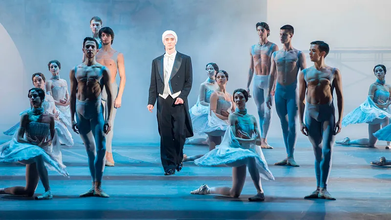

В 2019 году российской национальной театральной премии и фестивалю «Золотая маска» исполняется 25 лет. Основная конкурсная программа пройдет в Москве с февраля по апрель: на столичных сценах свои постановки представят лучшие коллективы страны. Эксперт «Золотой маски» Ольга Романцова рассказала, какие спектакли нельзя пропустить в этом году.
Юрий Бурлака, в августе 2017 года назначенный главным балетмейстером Самарского театра оперы и балета, реконструировал «Эсмеральду», поставленную Мариусом Петипа в Петербурге в 1886 году. Бурлака, подаривший новую жизнь многим шедеврам классического балета, восстановил старинные танцы вместе с молодым историком и текстологом балета Андреем Галкиным. Создатели сценографии и костюмов вдохновлялись эскизами директора Императорских театров Ивана Всеволожского. Благодаря этой постановке Самарский театр оперы и балеты впервые стал номинантом «Золотой маски».
Поначалу кажется, что от трагедии Шекспира в спектакле осталась только сюжетная канва: герои говорят современным языком и похожи на персонажей компьютерной игры. Под светом прожекторов Гертруда ездит на гироскутере, Гамлет устраивает самый настоящий рэп-баттл с отчимом Клавдием, иногда героев снимают на видеокамеру и транслируют на стены проволочной «клетки», где они обитают. Но главная тема спектакля — бунт Гамлета против лицемерного, находящегося в кризисе мира — в спектакле точно от Шекспира.
В спектакле нет ни декораций, ни сцены. Мужчины и женщины, стоящие в разных концах зала, отвечают на вопросы незримого следователя о человеке, который недавно погиб. Соседка, бывшая возлюбленная и коллеги рассказывают то, что знали о нем, постепенно создавая портрет погибшего. История обрастает новыми подробностями: он был писателем, сочинил не один роман и давал интервью.
 Полнометражный балет современного композитора Ильи Демуцкого рассказывает о разных периодах жизни Нуреева. Он начинается сценой аукциона, где имущество легендарного танцовщика и хореографа распродается с молотка. После объявления очередного лота на сцене возникает связанная с ним история из жизни. Посохов создал хореографию, использовав классические балетные па. Но, несмотря на строгий рисунок, на сцене порой возникает «химия», которая всегда отличала танец Нуреева. Еще одна особенность постановки — в ней соединены опера, драматическое действие и танец.